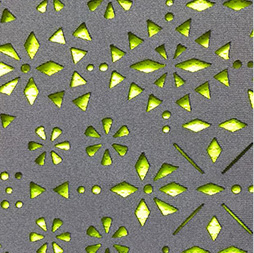
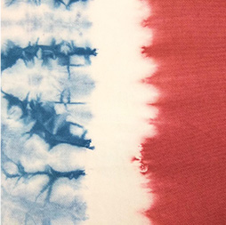
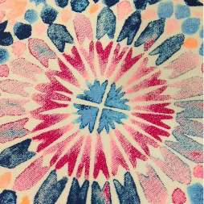
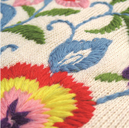

Technology and R&D
Speed, Productivity, Quality and Cost are the biggest challenges of recent years. To reduce the impact of the wage increases and the dependence of the workers with great skill, Makalot is concentrating on research and application on automation to keep up with clients’ demands and rapid response.
Special process of garment Including garment washing, embroidering, printing , and laser cut.
In-house manufacturing ability.

Laser Cut

Garment Wash

Print

Embroidery